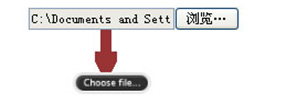

.pic_center a { display:table-cell; vertical-align:middle; *display:block; text-align:center; *font-family:Arial;/*防止非utf-8引起的hack失效问题，如gbk编码*/ *font-size: 201px;/*约为高度的0.873，230*0.873 约为201*/ width:230px; height:230px; line-height:230px; border:1px solid #ddd; overflow:hidden; } .pic_center a img { vertical-align:middle; }
.rtop , .rbottom { display:block; background:#fff; } .rtop * , .rbottom * { display: block; height: 1px; overflow: hidden; background:#ccc; } .r1 { margin: 0 5px; } .r2 { margin: 0 3px; } .r3 { margin: 0 2px; } .r4 { margin: 0 1px; height: 2px; } #withoutPic { width: 500px; background:#ccc; color:#fff; margin:0 15px; }<div id="withoutPic"> <b class="rtop"> <b class="r1"></b> <b class="r2"></b> <b class="r3"></b> <b class="r4"></b> </b> <p> This is a example of "不用图片实现 Rounded corners " by kissjava !!! </p> <b class="rbottom"> <b class="r4"></b> <b class="r3"></b> <b class="r2"></b> <b class="r1"></b> </b> </div>
.waps { background:url(aaa.jpg) no-repeat top center fixed; width:1004px; text-align:center; line-height:28px; font-size:12px; font-family:Arial, Helvetica, sans-serif; } .con { text-align:left; width:100px; height:400px; margin:0px auto; /*padding:100px 50px;*/ background:rgba(0, 0, 0, 0.6) none repeat scroll 0 0 !important;/*实现FF背景透明，文字不透明*/ filter:Alpha(opacity=60); background:#000;/*实现IE背景透明*/ } .con p { color:#fff; position:relative; }/*实现IE文字不透明*/<div class="waps"> <div class="con"> <p> CSS实现背景透明，文字不透明（各浏览器兼容）CSS实现背景透明 </p> </div> </div>
.mypng { azimuth: expression( this.pngSet?this.pngSet=true:(this.nodeName == "IMG" && this.src.toLowerCase().indexOf('.png')>-1 ?(this.runtimeStyle.backgroundImage = "none", this.runtimeStyle.filter = "progid:DXImageTransform.Microsoft.AlphaImageLoader(src='" + this.src + "', sizingMethod='image')", this.src = "{&STATIC}/images/transparent.gif"): (this.origBg = this.origBg? this.origBg :this.currentStyle. backgroundImage.toString(). replace('url("','').replace('")',''), this.runtimeStyle.filter = "progid: DXImageTransform.Microsoft.AlphaImageLoader( src='" + this.origBg + "', sizingMethod='crop')", this.runtimeStyle.backgroundImage = "none")), this.pngSet=true); }
.index_contenti { width:950px; height:1282px; margin:0 auto; margin-top:60px; } .index_content { height:1282px; background-image: url("{&STATIC}/images/index_content_bg_new.png")!important; /* FF IE7 */ background-repeat: no-repeat; _filter: progid:DXImageTransform.Microsoft.AlphaImageLoader (src="{&STATIC}/images/index_content_bg_new.png"); /* IE6 */ _background-image: none; /* IE6 */ } .index_contentia { position:relative; z-index:100; }
最外层div设置最小宽度并且不可以设置里面一层设置：overflow:hidden;最里面一层设置内容去的宽度并且：background-images:none;居中处理margin:0 auto;
加载不同的样式
有的需求需要在页面不同时候加载不同的样式，原来有这么一招，
页面上：
注意红色字体部分。href="/ui/css/default.css"runat="server" id="defaultcss" />
在后台cs代码中，在需要加载不一样css的地方写上：记得加上有效的路径。defaultcss.Attributes["href"] = "/css/abcd.css";
Css设置文字横向间距
css控制间距的样式有2个word-spacing 和letter-spacing
word-spacing 属性增加或减少单词间的空白（即字间隔）。但是对汉字无效
object.style.wordSpacing=”5px”
中国字<span style=”word-spacing:50px;”></span>
this is a test
letter-spacing 属性增加或减少字符间的空白（字符间距）。
该属性定义了在文本字符框之间插入多少空间。由于字符字形通常比其字符框要窄，指定长度值时，会调整字母之间通常的间隔。因此，normal 就相当于值为 0。 脚本语法object.style.letterSpacing=”100px”
下面是设置50px的letter-spacing字母间距
中 国 字
t h i s i s a t e s t
overflow: hidden; white-space: nowrap; -o-text-overflow: ellipsis; text-overflow: ellipsis;
像 你所遇到的问题一样， IE6浏览器有太多的bug让制作网页的人头疼。这篇文章介绍的是介绍的是如何解决IE6不支持position:fixed; 属性的办法。如果我们需要 做某个元素始终位于浏览器的底部，不会因为浏览器窗口的缩放和滚动条的滚动而变化， 那个肯定是想到的用position:fixed生成绝对定位，只要设 置这个CSS属性就能达到刚刚的需求。 当其他浏览器都正常显示的时候，只有IE6不那么完美。该元素的位置是通过"left", "top", "right" 以及 "bottom" 属性进行规定。 一般的 position:fixed; 实现方法
这个 HTML 元素使用的 CSS 代码如下：<div id="top">...</div>实现让#top{ position:fixed; bottom:0; right:20px; }元素固定在浏览器的底部和距离右边的20个像素。 在 IE6 中实现 position:fixed; 的办法 刚刚提过，在IE6中是不能直接使用 position:fixed; 。 你需要一些 CSS Hack 来解决它。当然，IE6 的问题也不仅仅 position:fixed; 相同的还是让<div id="top">...</div>元素固定在浏览器的底部和距离右边的20个像素，这次的代码是：<div id="top">...</div>right 跟 left 属性可以用绝对定位的办法解决，而 top 跟 bottom 就需要用上面的表达式来实现。 其中在 _position:absolute; 中的 _ 符号只有 IE6 才能识别，目的是为了区分其他浏览器。 上面的只是一个例子，下面的才是最重要的代码片段： 使元素固定在浏览器的顶部：#top{ position:fixed; _position:absolute; bottom:0; right:20px; _bottom:auto; _top:expression(eval(document.documentElement.scrollTop+document. documentElement.clientHeight-this.offsetHeight-( parseInt(this.currentStyle.marginTop,10)||0)-( parseInt(this.currentStyle.marginBottom,10)||0))); }使元素固定在浏览器的底部：#top{ _position:absolute; _bottom:auto; _top:expression(eval(document.documentElement.scrollTop)); }这两段代码只能实现在最底部跟最顶部，你可以使用 _margin-top:10px; 或者 _margin-bottom:10px; 修改其中的数值控制元素的位置。 position:fixed; 闪动问题#top{ _position:absolute; _bottom:auto; _top:expression(eval(document.documentElement.scrollTop+document.documentElement.clientHeight-this.offsetHeight-(parseInt(this.currentStyle.marginTop,10)||0)-(parseInt(this.currentStyle.marginBottom,10)||0))); }
现在，问题还没有完全解决。在用了上面的办法后，你会发现： 被固定定位的元素在滚动滚动条的时候会闪动。解决闪动问题的办法是在 CSS 文件中加入：其中 * 是给 IE6 识别的。 到此，IE6 的 position:fixed; 问题已经被解决了。*html{ background-image:url(about:blank); background-attachment:fixed; }
从网上收集了IE7,6与Fireofx的兼容性处理方法并整理了一下. 对于web2.0的过度,请尽量用xhtml格式写代码,而且DOCTYPE 影响 CSS 处理, 作为W3C的标准,一定要加 DOCTYPE声名.
CSS技巧
1.div的垂直居中问题将行距增加到和整个DIV一样高vertical-align:middle;然后插入文字，就垂直居中了。缺点是要控制内容不要换行 2. margin加倍的问题 设置为float的div在ie下设置的margin会加倍。 这是一个ie6都存在的bug。解决方案是在这个div里面加上line-height:200px;例如：display:inline;相应的css为<#div id=”imfloat”>3.浮动ie产生的双倍距离#IamFloat { float:left; margin:5px;/*IE下理解为10px*/ display:inline;/*IE下再理解为5px*/ }这里细说一下block与inline两个元素： block元素的特点是,总是在新行上开始,高度,宽度,行高,边距都可以控制(块元素); Inline元素的特点是,和其他元素在同一行上,不可控制(内嵌元素);#box { float:left; width:100px; margin:0 0 0 100px; //这种情况之下IE会产生200px的距离 display:inline; //使浮动忽略 }4 IE与宽度和高度的问题 IE 不认得min-这个定义， 但实际上它把正常的width和height当作有min的情况来使。 这样问题就大了，如果只用宽度和高度，正常的浏览器里这两个值就不会变， 如果只用min-width和min-height的话，IE下面根本等于没有设置宽度和高度。 比如要设置背景图片，这个宽度是比较重要的。要解决这个问题，可以这样：#box { display:block; //可以为内嵌元素模拟为块元素 display:inline; //实现同一行排列的效果 diplay:table; }5.页面的最小宽度 min -width是个非常方便的CSS命令， 它可以指定元素最小也不能小于某个宽度，这样就能保证排版一直正确。 但IE不认得这个，而它实际上把width当做最小宽度来使。 为了让这一命令在IE上也能用，可以把一个#box { width: 80px; height: 35px; } html>body #box { width: auto; height: auto; min-width: 80px; min-height: 35px; }放到 标签下，然后为div指定一个类, 然后CSS这样设计：第一个min-width是正常的；但第2行的width使用了Javascript， 这只有IE才认得，这也会让你的HTML文档不太正规。它实际上通过Javascript的判断来实现最小宽度。 6.DIV浮动IE文本产生3象素的bug 左边对象浮动，右边采用外补丁的左边距来定位，右边对象内的文本会离左边有3px的间距.#container { min-width: 600px; width:e-xpression(document.body.clientWidth < 600? "600px": "auto" ); }#box { float:left; width:800px; } #left { float:left; width:50%; } #right { width:50%; } *html #left { margin-right:-3px; //这句是关键 }7.IE捉迷藏的问题 当div应用复杂的时候每个栏中又有一些链接， DIV等这个时候容易发生捉迷藏的问题。 有些内容显示不出来，当鼠标选择这个区域是发现内容确实在页面。 解决办法：对 #layout使用line-height属性 或者给#layout使用固定高和宽。页面结构尽量简单。 8.float的div闭合;清除浮动;自适应高度; ① 例如：<div id="box"> <div id="left"></div> <div id="right"></div> </div>这里的NOTfloatC并不希望继续平移，而是希望往下排。 (其中floatA、floatB的属性已经设置为 float:left;) 这段代码在IE中毫无问题，问题出在FF。原因是NOTfloatC并非float标签， 必须将float标签闭合。在<#div id=”floatA” > <#div id=”floatB” > <#div id=” NOTfloatC” >之间加上<#div class=”floatB”> <#div class=”NOTfloatC”>这个div一定要注意位置，而且必须与两个具有float属性的div同级， 之间不能存在嵌套关系，否则会产生异常。 并且将clear这种样式定义为为如下即可：< #div class=”clear”>.clear{ clear:both;}②作为外部 wrapper 的 div 不要定死高度,为了让高度能自动适应， 要在wrapper里面加上overflow:hidden; 当包含float的 box的时候， 高度自动适应在IE下无效，这时候应该触发IE的layout私有属性(万恶的IE啊！) 用zoom:1;可以做到，这样就达到了兼容。 例如某一个wrapper如下定义：③对于排版,我们用得最多的css描述可能就是 float:left.有的时候我们需要在n栏的float div后面做一个统一的背景,譬如:.colwrapper { overflow:hidden; zoom:1; margin:5px auto; }比如我们要将page的背景设置成蓝色,以达到所有三栏的背景颜色是蓝色的目的, 但是我们会发现随着left center right的向下拉长,而 page居然保存高度不变,问题来了, 原因在于page不是float属性,而我们的page由于要居中,不能设置成float,所以我们应该这样解决<div id=”page”> <div id=”left”></div> <div id=”center”></div> <div id=”right”></div> </div>再嵌入一个float left而宽度是100%的DIV解决之 ④万能float 闭合(非常重要!) 关于 clear float 的原理可参见 [How To Clear Floats Without Structural Markup], 将以下代码加入Global CSS 中,给需要闭合的div加上 class="clearfix" 即可,屡试不爽. /* Clear Fix */<div id=”page”> <div id=”bg” style=”float:left;width:100%”> <div id=”left”></div> <div id=”center”></div> <div id=”right”></div> </div> </div>11.高度不适应 高度不适应是当内层对象的高度发生变化时外层高度不能自动进行调节， 特别是当内层对象使用margin 或paddign 时。 例：.clearfix:after { content:"."; display:block; height:0; clear:both; visibility:hidden; } .clearfix { display:inline-block; } /* Hide from IE Mac */ .clearfix {display:block;} /* End hide from IE Mac */ /* end of clearfix */ /*或者这样设置：*/ .hackbox{ display:table; //将对象作为块元素级的表格显示 }#box { background-color:#eee; } #box p { margin-top: 20px; margin-bottom: 20px; text-align:center; }解决方法：在P对象上下各加2个空的div对象CSS代码：<div id="box"> <p>p对象中的内容</p> </div>或者为DIV加上border属性。 12 .IE6下为什么图片下有空隙产生 解决这个BUG的方法也有很多, 可以是改变html的排版,或者设置img 为.1 { height:0px; overflow:hidden; }或者设置vertical-align 属性为display:block都可以解决. 13.如何对齐文本与文本输入框 加上vertical-align:top | bottom |middle |text-bottom;14.web标准中定义id与class有什么区别吗 一. web标准中是不容许重复ID的,比如 div id="aa" 不容许重复2次,而class 定义的是类,理论上可以无限重复, 这样需要多次引用的定义便可以使用他. 二.属性的优先级问题 ID 的优先级要高于class,看上面的例子 三.方便JS等客户端脚本,如果在页面中要对某个对象进行脚本操作,那么可以给他定义一个ID, 否则只能利用遍历页面元素加上指定特定属性来找到它,这是相对浪费时间资源,远远不如一个ID来得简单. 15. LI中内容超过长度后以省略号显示的方法 此方法适用与IE与OP浏览器vertical-align:middle; input { width:200px; height:30px; border:1px solid red; vertical-align:middle; }16.为什么web标准中IE无法设置滚动条颜色了 解决办法是将body换成htmlli { width:200px; white-space:nowrap; text-overflow:ellipsis; -o-text-overflow:ellipsis; overflow: hidden; }17.为什么无法定义1px左右高度的容器 IE6下这个问题是因为默认的行高造成的,解决的方法也有很多,例如:<!DOCTYPE html PUBLIC "-//W3C//DTD XHTML 1.0 Strict//EN" " http://www.w3.org/TR/xhtml1/DTD/xhtml1-strict.dtd"> <meta http-equiv="Content-Type" content="text/html; charset=gb2312" /> <style type="text/css"> </style>18.怎么样才能让层显示在FLASH之上呢 解决的办法是给FLASH设置透明overflow:hidden zoom:0.08 line-height:1px19.怎样使一个层垂直居中于浏览器中 这里我们使用百分比绝对定位, 与外补丁负值的方法,负值的大小为其自身宽度高度除以二<param name="wmode" value="transparent" /><style type="text/css"> </style>
所有参数：$(obj).soChange({ thumbObj:null, //导航对象，默认为空 botPrev:null, //按钮上一个，默认为空 botNext:null, //按钮下一个。默认为空 changeType:'fade',/×切换方式，可选：fade,slide， 默认为fade，1.6版新增方法，详见例3-定义对象切换方式为slide×/ thumbNowClass:'now', //导航对象当前的class,默认为now thumbOverEvent:true,/×鼠标经过thumbObj时是否切换对象，默认为true， 为false时，只有鼠标点击thumbObj才切换对象×/ slideTime:1000, /×平滑过渡时间，默认为1000ms，为0或负值时， 忽略changeType方式，切换效果为直接显示隐藏×/ autoChange:true, //是否自动切换，默认为true clickFalse:true,/×导航对象点击是否链接无效，默认是return false链接无效， 当thumbOverEvent为false时，此项必须为true，否则鼠标点击事件冲突×/ overStop:true,/×鼠标经过切换对象时，是否停止切换， 并于鼠标离开后重启自动切换，前提是已开启自动切换×/ changeTime:5000, //对象自动切换时间，默认为5000ms，即5秒 delayTime:300 //鼠标经过时对象切换迟滞时间，推荐值为300ms });
#marquee ,#marquee li { padding:0px; margin:0px; } #marquee { position:relative; list-style:none; height:150px; width:210px; padding-left:5px; overflow:hidden; border:10px solid #eee; } #marquee li { position:absolute; font-size:12px; } #marquee p { color:#999999; }var Marquee = function(id){ try{document.execCommand(" BackgroundImageCache", false, true);}catch(e){}; var container = document.getElementById(id), slide = container.getElementsByTagName("li")[0], speed = arguments[1] || 80, //速度 delta = 0, //当前滚动的位置 critical = slide.offsetHeight; //临界点 slide.innerHTML += slide.innerHTML; var rolling = function(){ delta == -critical ? delta = 0 : delta--; slide.style.top = delta + "px"; } var timer = setInterval(rolling,speed) //设置定时器 container.onmouseover=function() {clearInterval(timer)} //鼠标移到marquee上时，清除定时器，停止滚动 container.onmouseout=function() {timer=setInterval(rolling,speed)} //鼠标移开时重设定时器 } window.onload = function(){ Marquee("marquee"); }<ul id="marquee"> <li> <p> 纤云弄巧，飞星传恨，银汉迢迢暗度。纤云弄巧， 飞星传恨，银汉迢迢暗度。纤云弄巧，飞星传恨，银汉迢迢暗度。 纤云弄巧，飞星传恨，银汉迢迢暗度。纤云弄巧，飞星传恨，银汉迢迢暗度。 纤云弄巧，飞星传恨，银汉迢迢暗度。纤云弄巧，飞星传恨，银汉迢迢暗度。 纤云弄巧，飞星传恨，银汉迢迢暗度。纤云弄巧，飞星传恨，银汉迢迢暗度。 纤云弄巧，飞星传恨，银汉迢迢暗度。纤云弄巧，飞星传恨，银汉迢迢暗度。 纤云弄巧，飞星传恨，银汉迢迢暗度。纤云弄巧，飞星传恨，银汉迢迢暗度。 纤云弄巧，飞星传恨，银汉迢迢暗度。纤云弄巧，飞星传恨，银汉迢迢暗度。 纤云弄巧，飞星传恨，银汉迢迢暗度。纤云弄巧，飞星传恨，银汉迢迢暗度。 纤云弄巧，飞星传恨，银汉迢迢暗度。纤云弄巧，飞星传恨，银汉迢迢暗度。 纤云弄巧，飞星传恨，银汉迢迢暗度。纤云弄巧，飞星传恨，银汉迢迢暗度。 纤云弄巧，飞星传恨，银汉迢迢暗度。纤云弄巧，飞星传恨，银汉迢迢暗度。 纤云弄巧，飞星传恨，银汉迢迢暗度。------------------- </p> </li> </ul>
初始化：var slideOperate = { slideUlId : "",//UL id 用于操作Ul fadeInTime : 2000,//淡出淡入时间 slideDownTime : 5000,//滑动时间 nextDown:function(){ //往下滑动(前提Ul竖排) var lastLi = $("#" + this.slideUlId + " li:last-child"); $("#" + this.slideUlId + " li:first-child").before(lastLi); //前置 $(lastLi).find("div").fadeOut(); //隐藏最后一个li的内容 $(lastLi).hide() ;//隐藏最后一个li $(lastLi).find("div").fadeIn(this.fadeInTime,function(){ $(lastLi).slideDown(this.slideDownTime); }); } };$(document).ready(function(){ slideOperate.slideUlId = "ulRowCount"; //slideRow.js的初始化设置（re_odr_other网页内容滚动js（slideRow.js）） setInterval("slideOperate.nextDown()",5000); //slideRow.js的初始化设置 （re_odr_other网页内容滚动js（slideRow.js）） });
$(function(){ $(".charity_login_register").hide(); var screenwidth,screenheight,mytop,getPosLeft,getPosTop; screenwidth = $(window).width(); screenheight = $(window).height(); mytop = $(document).scrollTop(); getPosLeft = screenwidth/2-380; getPosTop = screenheight/2-140; $(".charity_login_register").css({ "left":getPosLeft,"top":getPosTop}); $(window).resize(function(){ screenwidth = $(window).width(); screenheight = $(window).height(); mytop = $(document).scrollTop(); getPosLeft = screenwidth/2-380; getPosTop = screenheight/2-140; $(".charity_login_register").css({ "left":getPosLeft,"top":getPosTop+mytop}); }); $(window).scroll(function(){ screenwidth = $(window).width(); screenheight = $(window).height(); mytop = $(document).scrollTop(); getPosLeft = screenwidth/2-380; getPosTop = screenheight/2-140; $(".charity_login_register").css({ "left":getPosLeft,"top":getPosTop+mytop}); }); $(".charity_contentR_unapply_a").click(function(){ $(".charity_login_register").fadeIn("fast"); $("body").append(""); var documentheight = $(document).height(); $("#greybackground").css({ "opacity":"0.5","height":documentheight}); return false; }); $(".charity_login_registerClose").click(function(){ $(".charity_login_register").hide(); $("#greybackground").remove(); return false; }); });.charity_login_register { position:absolute; width:754px; height:355px; background:url(" ../images/20120308/charity_login_register.jpg") no-repeat left top; z-index:99999; } #greybackground { background: none repeat scroll 0 0 #000000; display: block; left: 0; position: absolute; top: 0; width: 100%; z-index: 100; }
收藏：function AddFavorite(sURL, sTitle){ try{ window.external.addFavorite(sURL, sTitle); }catch (e){ try{ window.sidebar.addPanel(sTitle, sURL, ""); }catch (e){ alert("加入收藏失败，请使用Ctrl+D进行添加"); } } }刷新：<a href="#" title="收藏本页" class="charity_box2_elevator_a1" onclick="AddFavorite(window.location,document.title);"></a>设为首页：function reload() { window.location.reload(); }function SetHome(obj,vrl) { try { obj.style.behavior='url(#default#homepage)'; obj.setHomePage(vrl); } catch(e){ if(window.netscape) { try { netscape.security.PrivilegeManager.enablePrivilege( "UniversalXPConnect"); } catch (e) { alert("此操作被浏览器拒绝！ \n请在浏览器地址栏输入“about:config”并回车\n 然后将[signed.applets.codebase_principal_support]设置为'true'"); } var prefs = Components.classes[' @mozilla.org/preferences-service;1'] .getService(Components.interfaces.nsIPrefBranch); prefs.setCharPref('browser.startup.homepage',vrl); } } }设为首页2<input id="Button3" type="button" value="设为首页" onclick="SetHome(this,window.location)" style="cursor:hand" />// 设为首页//Set Homepage and add favorite link $("#sethomepage").click(function(){ var url = this.href; try { this.style.behavior = "url(#default#homepage)"; this.setHomePage(url); } catch (e) { if (window.netscape) { try { netscape.security.PrivilegeManager. enablePrivilege("UniversalXPConnect"); } catch (e) { alert("此操作被浏览器拒绝！ \n请在浏览器地址栏输入“about:config”并回车\n 然后将 [signed.applets.codebase_principal_support] 的值设置为'true',双击即可。"); return false; } var prefs = Components.classes ["@mozilla.org/preferences-service;1"].getService (Components.interfaces.nsIPrefBranch); prefs.setCharPref('browser.startup.homepage',url); } } return false; });$("#sethomepage").click(function(){ var url = this.href; try { this.style.behavior = "url(#default#homepage)"; this.setHomePage(url); } catch (e) { if (document.all) { document.body.style.behavior="url(#default#homepage)"; document.body.setHomePage(url); } else if (window.sidebar) { if (window.netscape) { try { netscape.security.PrivilegeManager.enablePrivilege("\n UniversalXPConnect"); } catch (e) { alert("此操作被浏览器拒绝！\n 请在浏览器地址栏输入 “about:config”并回车\n然后将 \n [signed.applets.codebase_principal_support]\n 的值设置为'true',双击即可。"); return false; } } var prefs = Components.classes["@mozilla.org/preferences-service;1"] .getService(Components.interfaces.nsIPrefBranch); prefs.setCharPref('browser.startup.homepage',url); } else { alert(' 您的浏览器不支持自动设置首页, \n 使用浏览器菜单或在浏览器地址栏输入\n “chrome://settings/browser”手动设置!');\n $("#sethomepage").href(); } } return false; });
include 一个文件之后，这块代码的上面出现了很多空格，有木有！！！
前段时间我就遇到这样的问题，用 Firebug 查看，看到代码有一个地方“断”开了，
点击那块区域竟然能编辑，里面全是空格。把这些空格删掉之后页面就正常了。
好吧，既然是页面上多了空格，那就删掉。然后在源文件里没有看到空格，
甚至连标签的缩进都删除了，那些空格依然存在。
经过排查，发现是 include 的文件问题，
但是为什么这个文件会有问题呢？
百度 GG 后，才知道这个问题由 utf-8 文件 Unicode 签名 (BOM) 产生的。
所以要把文件重新存储一下，把编码选择为无BOM格式
$.fn.smartFocus = function (options) { var defaults = { defaultText: '璇疯緭鍏ユ枃瀛� ,class_name: null}; var opt = $.extend(defaults, options); return this.each(function () { $(this).focus(function () { var text = $(this).val(); if (text == opt.defaultText) { $(this).val(''); if(opt.class_name){ $(this).removeClass(opt.class_name); } else { $(this).attr('style',''); } } }).blur(function () { var text = $(this).val(); if (text == '') { $(this).val(opt.defaultText); if(opt.class_name){ $(this).addClass(opt.class_name); } else { $(this).css({"color":"#999", "font-size":"12px"}); } } else { $(this).removeClass(opt.class_name); } }); if ($(this).val() == '') { $(this).val(opt.defaultText); if(opt.class_name){ $(this).addClass(opt.class_name); } else { $(this).css({"color":"#999", "font-size":"12px"}); } } }); };
只是剪切板改掉了, 不能恢复..function onPaste() { var ctrl = event.srcElement; var text = window.clipboardData.getData( "Text "); if(text!=null) { if(ctrl.value.length > = maxLength) event.returnValue = false; else if(text.length > maxLength - ctrl.value.length) window.clipboardData.setData( "Text ", text.substr(0, maxLength - ctrl.value.length)); } }
function fullWindow(){ if (window.screen) {/*判断浏览器是否支持window.screen判断浏览器是否支持screen */ var sw = screen.availWidth; /*定义一个myw，接受到当前全屏的宽 */ var sh = screen.availHeight; /*定义一个myw，接受到当前全屏的高 */ var csw=document.body.clientWidth; var csh=document.body.clientHeight; if( sw < csw || sh < csh ){ window.moveTo(0, 0); /*把window放在左上脚 */ window.resizeTo(sw, sh); /*把当前窗体的长宽跳转为sw,sh */ } } }
1、IE6支持max-height解决方法 IE6支持最大高度解决CSS代码：说明：.yangshi{max-height:1000px; _height:expression((document.documentElement.clientHeight ||document.body.clientHeight)<1000?"1000px":""); overflow:hidden;}这个是IE6以上级其它品牌浏览器支持最大范围高度。而max-height:1000px;则是让IE6支持max-height替代CSS代码，但效果和其它版本浏览器相同效果。 让所有浏览器都支持max-height的CSS样式代码，完整：_height:expression((document.documentElement.clientHeight ||document.body.clientHeight)<1000?"1000px":""); overflow:hidden;这里的1000和1000px是你需要的数值，注意3个数值的相同。 让IE6支持最大高度max-height的时候别忘记加上max-height:1000px; _height:expression((document.documentElement.clientHeight ||document.body.clientHeight)<1000?"1000px":""); overflow:hidden;2、IE6支持min-height解决方法 IE6支持最小高度解决CSS代码：overflow:hidden;说明：.yangshi{min-height:1000px; _height:expression((document.documentElement.clientHeight ||document.body.clientHeight)>1000?"1000px":"");}这个是IE6以上级其它品牌浏览器支持最小范围高度。而min-height:1000px;则是让IE6支持min-height替代CSS代码，但 效果和其它版本浏览器相同效果。 让所有浏览器都支持min-height的CSS样式代码，完整：_height:expression((document.documentElement.clientHeight ||document.body.clientHeight)>1000?"1000px":"");这里的1000和1000px是你需要的数值，注意3个数值的相同。 3、IE6支持max-height又支持min-height方法 让所有浏览器包括IE6即支持最大高度又支持最小高度。min-height:1000px; _height:expression((document.documentElement.clientHeight|| document.body.clientHeight)>1000?"1000px":"");IE6支持Max-Height和支持Min-Height CSS代码.yangshi{Max-Height:620px;Min-Height:40px;_height: expression(this.scrollHeight > 620 ? "620px" : (this.scrollHeight < 40 ? "40px" : "auto"));}_height:expression(this.scrollHeight > 620 ? "620px" : (this.scrollHeight < 40 ? "40px" : "auto"));
scrollHeight: 获取对象的滚动高度。
scrollLeft:设置或获取位于对象左边界和窗口中目前可见内容的最左端之间的距离
scrollTop:设置或获取位于对象最顶端和窗口中可见内容的最顶端之间的距离
scrollWidth:获取对象的滚动宽度
offsetHeight:获取对象相对于版面或由父坐标 offsetParent 属性指定的父坐标的高度
offsetLeft:获取对象相对于版面或由 offsetParent 属性指定的父坐标的计算左侧位置
offsetTop:获取对象相对于版面或由 offsetTop 属性指定的父坐标的计算顶端位置
event.clientX 相对文档的水平座标
event.clientY 相对文档的垂直座标
event.offsetX 相对容器的水平坐标
event.offsetY 相对容器的垂直坐标
document.documentElement.scrollTop 垂直方向滚动的值
event.clientX+document.documentElement.scrollTop 相对文档的水平座标+垂直方向滚动的量
以上主要指IE之中，FireFox差异如下：
IE6.0、FF1.06+：
clientWidth = width + padding
clientHeight = height + padding
offsetWidth = width + padding + border
offsetHeight = height + padding + border
IE5.0/5.5：
clientWidth = width - border
clientHeight = height - border
offsetWidth = width
offsetHeight = height(需要提一下：CSS中的margin属性，与clientWidth、offsetWidth、clientHeight、offsetHeight均无关)
网页可见区域宽： document.body.clientWidth;
网页可见区域高： document.body.clientHeight;
网页可见区域宽： document.body.offsetWidth (包括边线的宽);
网页可见区域高： document.body.offsetHeight (包括边线的宽);
网页正文全文宽： document.body.scrollWidth;
网页正文全文高： document.body.scrollHeight;
网页被卷去的高： document.body.scrollTop;
网页被卷去的左： document.body.scrollLeft;
网页正文部分上： window.screenTop;
网页正文部分左： window.screenLeft;
屏幕分辨率的高： window.screen.height;
屏幕分辨率的宽： window.screen.width;
屏幕可用工作区高度： window.screen.availHeight;
屏幕可用工作区宽度：window.screen.availWidth;
表 单的制作常常给我们带来无比的烦恼，比如说表单中的“input[type="radio"]、 input[type="checkbox"]、 select和input[type="file"]”之类， 我们都无法直接通过样式来达到设计的设计要求，如果为了实现设计的设计的优美效果， 我们必须 通过CSS和js来实现。下面我们一起来学习如何让“input[type="file"]”实现下图那种效果： 
现在我们知道我们的目标了，下面开始我们一起来学习如何实现上图展示的“input[type="file"]”表单元素效果。
一、HTML Markup我们给表单元素<form action="" class="form" method="post"> <label for="" class="cabinet"> <input type="file" class="file" /> </label> </form>定义了一个类名“file”， 并且在他的外面包裹了一个名叫“cabinet”的“<input type="file" />
对应的css样式相应的js代码#pwd-strength { 200px; padding-top: 2px; font: normal 13px/1.6 Tahoma, Verdana, serif; } #pwd-strength ul,li { list-style:none; padding: 1px; } .pwd-strength-box, .pwd-strength-box-low, .pwd-strength-box-med, .pwd-strength-box-hi { float: left; color: #464646; text-align: center; 30%; margin: -1px 0 0 -1px; border: 1px solid #D6B673; background-color: #fff; } .pwd-strength-box-low { color: #fff; background-color: #FF0000; } .pwd-strength-box-med { color: #fff; background-color: #FF9900; } .pwd-strength-box-hi { color: #fff; background-color: #009900; }本例子的html代码function checkPassword(pwd){ var objLow=document.getElementById("pwdLow"); var objMed=document.getElementById("pwdMed"); var objHi=document.getElementById("pwdHi"); objLow.className="pwd-strength-box"; objMed.className="pwd-strength-box"; objHi.className="pwd-strength-box"; if(pwd.length<6){ objLow.className="pwd-strength-box-low"; }else{ var p1= (pwd.search(/[a-zA-Z]/)!=-1) ? 1 : 0; var p2= (pwd.search(/[0-9]/)!=-1) ? 1 : 0; var p3= (pwd.search(/[^A-Za-z0-9_]/)!=-1) ? 1 : 0; var pa=p1+p2+p3; if(pa==1){ objLow.className="pwd-strength-box-low"; }else if(pa==2){ objMed.className="pwd-strength-box-med"; }else if(pa==3){ objHi.className="pwd-strength-box-hi"; } } }<input type="password" name="password" size="25" tabindex="4" onkeyup="checkPassword(this.value);" /> <div id="pwd-strength"> <ul> <li class="pwd-strength-box" id="pwdLow">简单 </li> <li class="pwd-strength-box" id="pwdMed">一般 </li> <li class="pwd-strength-box" id="pwdHi">安全 </li> </ul> </div>